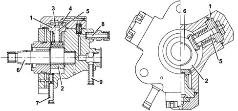
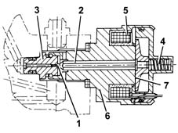
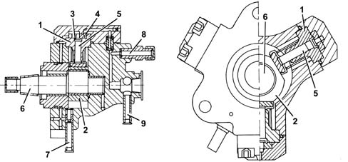
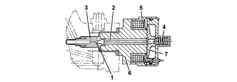

1060E diesel pressure pump
- Path
- Descriptions > 10 ENGINE > 1060 DIESEL FUEL INJECTION > 1060E diesel pressure pump
- Kind
- system description
- Applies to
- engines: 1.9 JTD 8v , 1.9 JTD 16v, 2.4 JTD 10v, 2.4 JTD 20v; all production periods
- Interactive page
- https://sloeber94.github.io/elrnDB-a156/en/#/3232877
Applies to: engines: 1.9 JTD 8v , 2.4 JTD 10v; all production periods
Pressure pump
It is "radial jet" type with three radial pistons (total capacity 0.657 cc) and is driven by the timing belt without requiring synchronization.
Each pumping unit consists of:
- a piston (5) operated by a cam (2) fixed to the pump (6) shaft
- an inlet valve (3)
- a supply ball valve (4).
The pressure pump should receive a supply pressure of at least 0.5 bar; the fuel system is therefore fitted with an auxiliary electric pump immersed in the tank.
The maximum supply pressure reaches 1350 bar.
The pressure pump is lubricated and cooled by the same diesel fuel by means of suitable ducts.

1, Cylinder 2, Cam 3, Inlet valve 4, Supply ball valve 5, Piston 6, Pump shaft 7, Inlet - low pressure (from the diesel filter) 8, Supply - high pressure (rail) 9, Supply - low pressure (recirculation)
Pressure regulator
It is fitted on the pressure pump and is operated by the injection control unit and regulates the fuel supply pressure to the injectors.
The pressure regulator basically consists of:
- a spherical shutter (1)
- a valve (3) control pin (2)
- a pre-loading spring (4)
- a coil (5).

1, Spherical shutter 2, Pin 3, Valve 4, Pre-loading spring 5, Coil 6, Casing 7, Keeper
Applies to: engines: 1.9 JTD 16v; all production periods
COMPONENT DESCRIPTION
Pressure pump
Specifcations
Type
It is the 'radial jet' type with three radial pistons (total capacity 0.567 cm3) and is driven by the timing belt without requiring synchronization.
Structure
Each pumping unit consists of:
- a piston (5) operated by a cam (2) fixed to the pump (6) shaft;
- – an inlet plate valve (3);
- a supply ball valve (4).
The pressure pump must be supplied with a pressure of at least 0.5 bar; so the fuel system has an auxiliary pump immersed in the fuel tank.
The maximum supply pressure reaches 1400 bar.
The pressure pump is lubricated and cooled by the same fuel by means of suitable ducts.

1 - Cylinder 2 - Cam 3 - Inlet valve 4 - Supply ball valve 5 - Piston 6 - Pump shaft 7 - Inlet - low pressure (from the fuel filter) 8 - Supply - high pressure (to the single fuel manifold) 9 - Supply - low pressure (to the fuel return manifold)
Pressure regulator
Specifcations
Structure
It is fitted on the pressure pump and is operated by the injection control unit and regulates the fuel supply pressure to the injectors.
The pressure regulator basically consists of:
- a spherical shutter (1);
- a pin (2) controlling valve (3);
- a pre-loading spring (4);
- a coil (5).

1 - Spherical shutter 2 - Pin 3 - Valve 4 - Pre-loading spring 5 - Coil 6 - Casing 7 - Keeper
Applies to: engines: 2.4 JTD 20v; all production periods
COMPONENT DESCRIPTION
PRESSURE PUMP
Specifcations
Type
It is the 'radial jet' type with three radial pistons (total capacity 0.567 cm[sup3 ]) and is driven by the timing belt without requiring synchronization.
Structure
Each pumping unit consists of:
- a piston (5) operated by a cam (2) fixed to the pump (6) shaft
- an inlet valve (3)
- a supply ball valve (4).
The pressure pump must be supplied with a pressure of at least 0.5 bar; so the fuel system has an auxiliary pump immersed in the fuel tank.
The maximum supply pressure reaches 1400 bar. The pressure pump is lubricated and cooled by the same fuel by means of suitable ducts.
1. Cylinder 2. Cam 3. Inlet plate valve 4. Ball supply valve 5. Piston 6. Pump shaft 7. Low pressure inlet (from the fuel filter) 8. High pressure supply (to the single fuel manifold) 9. Low pressure supply (to the fuel return manifold pipe)
PRESSURE REGULATOR
Specifcations
Structure
It is mounted on the pressure pump and controlled by the engine management control unit. It regulates the pressure of the fuel supply to the injectors.
The pressure regulator basically consists of:
- a ball plunger (1)
- a pin (2) controlling valve (3)
- preload spring (4)
- a coil (5).
1. Spherical shutter 2. Pin 3. Valve 4 Pre-loading spring 5. Coil 6. Casing 7. Anchor